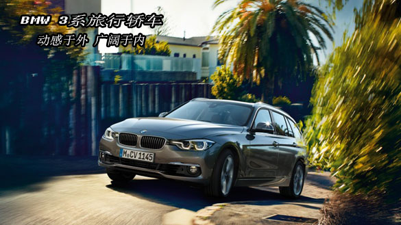

欢迎访问宝马-3系官方网站

欢迎访问宝马-3系官方网站 |
|
BMW-车型 ↓ |
售后服务 |
官方认证 |
登陆|注册 |
 |
运动优雅的外观协调统一，只要看一眼，就能感受到它传达的美感和动感。 与非常具有吸引力的前脸同样，后部的动感风格亦引人注目。它的后保险杠的两条水平线十分突出，与采用LED技术的尾灯保持合适距离，确保新BMW 3系在夜间依旧显眼。而集成电晕环的大灯也全系标配了LED技术。 新BMW 3系醒目的驾驶定位和出色的材质在您一坐进车内的那一刻便显露无遗。宽敞的车内空间为您提供了实用储物的可能性，全液晶数字仪表盘也为你带来更多便捷。同时，新BMW3系以优雅和动感为主，铬合金以及黑色高光泽表面等众多亮点突出了它的优秀品质。在典型的BMW风格中，驾驶舱系统地面向驾驶者，使操作十分方便简洁。每一个符合人机工程学的挑战都得到了格外关注和重视。带有触控功能的8.8’’中央显示屏的专业级导航系统就是很好的例证。显示系统充分显露了出色品质的外观和感觉。中央独立于中央控制台上方，该控制台配置有可以放置两瓶饮料的支架，当其滚轴盖关闭时，可以作为一个存储面。但这只是其中的一两个细节，从整体上来说，它融合了运动性与现代性。 |
|
内部精巧的设计和高品质的做工显而易见。例如，运动座椅可以搭配Dakota真皮。还有铝制饰条、黑色抛光高亮精致纵向饰条延伸到四个车门内侧，更加突显了品质。同时，标配的氛围灯可以通过结合直接或间接光源，巧妙地照亮内饰，让其拥有独特的时尚气质。驾驶舱增加了很多镀铬饰边，包括经典的仪表盘和通风口上的花边。空调和收音机控制装置周围是黑色高光的边框。作为可选灯套件的一部分，环境光可以通过结合直接或间接光源，巧妙地照亮内饰，让其拥有独特的时尚气质。 |
外观上运动优雅的协调统一，只需一眼，就能感受到它的美感和动感。水平板型、前裙脚精致设计的进气口与前灯结合，彰显了强劲的气势。而集成电晕环的双圆形大灯也可选择采用LED技术。与极具吸引力的前脸同样，后部的动感风格亦引人注目。造型醒目的后保险杠上有两条水平线，采用LED技术的尾灯之间距离较宽，确保BMW 3系旅行轿车在夜间依旧显眼。 BMW 3系旅行轿车的以驾驶者为中心和高档材质的醒目特点，在坐进车内的一瞬间就显露无遗。宽敞的车内空间为您提供了实用储物的可能性，功能性简洁的仪表盘也带来更大的便捷。突出优雅而动感的设计格调，采用镀铬饰件和黑色高光表面处理以彰显品质。驾驶舱围绕驾驶者设计，遵循以驾驶者为导向的经典原则，使操作方便简洁。所有的设计均严格遵循人体工程学原理，作为专业选装导航系统的8.8英寸控制显示系统就是很好的例证。该显示系统独立于中央控制台上方，充分体现优秀的品质和质感。中央控制台配置有可以放置两瓶饮料的支架，当其卷收盖关闭时，可以作为一个存储面。除细节之外，车辆的设计整体兼具运动性与现代感。 |
|
|  | 全景玻璃天窗令迷人的风景一览无余，让车辆内部显得明亮，营造出更为宽敞、开放的环境。如果光线过亮，可轻松顺畅地关闭遮阳卷帘。滑动和升降功能令全景玻璃天窗实现了各种通风选项。如果将全景玻璃天窗推至通风位置，遮阳帘会自动卷起，以便让气流进入车内。一体式挡风装置可自动启动，从而更大程度地减少在天窗开启状态下驾驶中的紊流。 内部精巧的设计和高品质的做工显而易见。例如，鞍棕色的“Dakota”真皮，带棕色延伸饰边。而带金属镶嵌的灰粒精致纹理木质饰条和珍珠镀铬高光饰条延伸到四个车门内侧，更加突显了优异品质。驾驶舱增加了很多镀铬饰边，包括经典的仪表盘和通风口上的花边。空调和收音机控制装置周围是黑色高光的边框。作为可选灯套件的一部分，环境氛围灯可以通过结合直接或间接光源，巧妙地照亮内饰，使其拥有令人赞叹的时尚气质。BMW个性版为您赋予最为独特的魅力。灰粒白精致纹理木质饰条或羊绒米色或棕色BMW个性扩展Merino真皮精细镶边，为内饰添加细致的触感，并将品质提高了一个等级。 |
BMW 3系GT，在外观和内饰设计上注入了BMW M基因，展现了运动天性。车身的鲜明轮廓展现了蓄势待发的前冲感。流线型车顶线条与无框车窗展现了运动型轿跑车的特性。掀背式设计以及超大空间行李厢保留了出色的功能性。2920毫米长轴距带来的宽敞空间让驾乘体验自如随心。全系标配运动座椅，升级纯粹驾驶乐趣。在BMW 3系GT中，驾驶者和前座乘客都可以体验到高度的舒适性，灵活可变的储物空间展现无限活力与潜力。长轴距和高车顶线条带来的宽敞空间令后座乘客尤为受益。无线充电或Wi-Fi热点等实用功能进一步提高了移动舒适性。 BMW 3系GT让人一见倾心。M空气动力学套件、前导流板、侧裙板、带暗黑色金属漆扩散板嵌饰的后导流板等将车辆运动风格展现无遗。修长的发动机罩以及从C柱到车身的鲜明轮廓展现了蓄势待发的前冲感。从侧面看，无框车窗和流线型车顶线条强调了运动型双门轿跑车的经典特性，同时，L型尾灯突出了车辆的宽阔外形。 置身车内，带多功能按钮的M真皮方向盘设计让您畅享运动性和功能性兼得的优质体验。为舒适驾驶体验量身定制的驾驶区域，其中的控制装置非常便于操作，这是实现纯粹驾驶乐趣的关键所在。全液晶数字仪表盘所包含的强大功能更加人性化的满足您的驾驶需求，同时Harman Kardon高端音响让您尽享豪华体验。 |